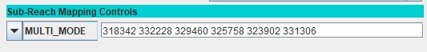
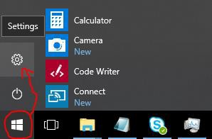
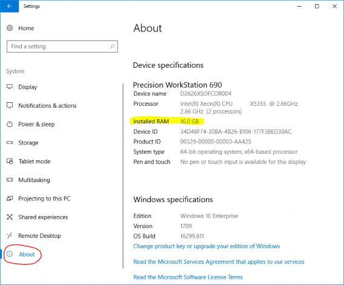
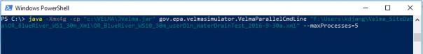
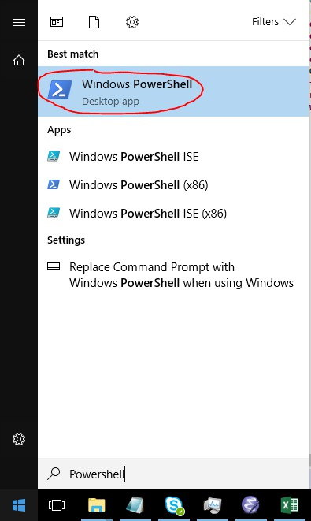

C.2 | How to Run VELMA in Parallel Mode
Overview (Tutorial C.2 - How To Run VELMA Parallel Mode)
This tutorial describes how to run VELMA in parallel mode, which splits a simulation run of a single, large watershed into multiple user-designated sub-watersheds, and runs each separately. When running in parallel mode, VELMA is programmed to collect simulated daily streamflow information for each designated sub-reach (sub-watershed) outlet. VELMA uses that information to compute, for each sub-reach outlet, the sum of flow contributions from
- all upstream grid cells draining to the sub-reach outlet, and
- only those cells falling between the sub-reach outlet and the next upstream sub-reach outlet (thereby excluding flow from all other upstream cells).
Thus, aside from potential gains in computational efficiency, sub-reach / sub-watershed delineations for running VELMA in parallel mode can help watershed managers tease apart streamflow responses to local and more distant upstream changes in land cover and land use.
Introduction
Within certain limitations, VELMA can be configured to split the simulation run of a single, large watershed into several sub-watersheds, and running each separately.
The sub-watersheds processes are scheduled such that downstream, dependent watersheds run after upstream contributing sub-watersheds.
For large (in terms of watershed total cell count) areas, splitting the "primary" watershed into sub- watersheds can reduce running time and memory footprint (per sub-process) by a significant amount.
Also, running a simulation in parallel mode is currently the only way to generate "only-my-own-sub- watershed runoff" data (as opposed to "my-sub-watershed-plus-upstream runoff" data) for a simulation.
- Running in parallel mode imposes some special requirements and limitations:
- Parallel mode can only be run from a command-line front-end. You cannot launch a parallel mode run from JVelma, and no runtime display is available.
- Parallel mode requires a relatively capable computer. If your computer has a single processor with only 1 or 2 cores, or a limited (4 Gigabytes or less) amount of memory, you may not gain any benefit from running in VELMA parallel mode.
- There is some additional configuration effort involved. You must determine sub-watershed (a.k.a. "sub-reach") outlets for the primary watershed. You must tweak the simulation configuration .xml (described later in this document).
- Some Disturbance functionality is unavailable. Specifically, Water Drain Disturbances are incompatible with parallel mode runs.
- Parallel Mode runs generate a larger number of results files, some of which may be redundant.
- For small watersheds, the overall running time of a parallel mode run may be greater than running it single-process style (i.e. under JVelma).
- Unlike JVelma or VelmaSimulatorCmdLine, if you want to run a simulation configuration in parallel mode multiple times, you must either manually rename the results directory from the previous run of that simulation configuration, or delete it. The Velma parallel mode tool will not create new "_0", "_1", etc. named-suffix results folders automatically.
Configuration Steps for A VELMA Parallel Mode Run
Start with a "proven", single-process configuration - i.e., a simulation configuration .xml file that has the enableReachMapping parameter set to SOLO_MODE, and that has been run successfully (even if only for one simulation year) under JVelma.
Load that simulation configuration .xml file into JVelma, and immediately change its "Simulation Run Name" (i.e. the run_index parameter's value), then save it. This creates a copy of the original .xml that you can modify for parallel mode, while saving the original .xml for single-process use.
Next:
- Change the enableReachMapping from SOLO_MODE to MULTI_MODE.
Note: there is also an AUTO_MODE available, but we do not recommend using it at this time.
- Enter the linear indices of the sub-reach outlet cells as the whitespace-separated value of the initializeReachOutlets parameter. The tutorial "Tutorial B.9 - JPDEM Sub-Reach Delineations" details how to determine sub-reach locations. Here is a snapshot of the "Run Parameters" tab's "Sub-Reach Mapping Controls" section showing an example of configuring for MULTI_MODE.
The numbers to the right of the MULTI_MODE setting are the sub-reach indices. Entering them into this numeric field assigns them to the initializeReachOutlets parameter.
- Spatial Data must be output as "trimmed" maps.
- Set the trimOutputToWatershedBoundary parameter value to true for any and all spatialDataWriter parameter Group(s).
- Set the trimOutputToWatershedBoundary parameter value to true for any and all disturbance parameter Group(s).
- All cover and soil results must be reported.
- Set the parameter reportAllCoverResults value to true.
- Set the parameter reportAllSoilResults value to true.
(Note: this is so important that VELMA's parallel mechanism will perform it automatically during simulator initialization if it is not done before-hand.)
Save the changes - the simulation configuration .xml is now ready for use in VELMA Parallel Mode.
Running a Simulation via the VelmaParallelCmdLine
Although you can use JVelma to prepare a simulation configuration for a parallel mode run, you cannot launch the simulation run from JVelma, via its START button. Instead, you must open a Microsoft Powershell command window, and invoke the VelmaParallelCmdLine tool.
(See Appendix I for how to start a Microsoft Powershell.)
But, before you do that, you should gather the following information:
- Determine the number of processor cores available on your computer. If you know this already, you're done. If you don't, open a Microsoft Powershell (you will need one to run VelmaParallelCmdLine in any case) and run the command highlighted in this example:
PS C:\> Get-WmiObject Win32_Processor | % {$_.DeviceID + " cores=" + $_.numberOfCores} CPU0 cores=4 CPU1 cores=4In the above example, the computer reports it has 2 CPUs, and each CPU has 4 processor cores, for a total of 8. As a rule of thumb, try to limit your VelmaParallelCmdLine runs to use less than the total number of available cores. Leaving 1 or 2 cores unused will keep the computer from becoming unresponsive to other processing requirements while your simulation is running.
- Determine the amount of RAM available on your computer. The simplest way to do this is to open the Windows Start -> Settings (the "gear" icon) Window, then click "System", and finally click "About". In the "About" window, look for the "Installed RAM" specification. Example:
The Settings icon:
Settings -> System -> About:
Knowing the amount of RAM available is important, because you will probably want to specify an initial heap size (via Java's -Xmx option), and VelmaParallelCmdLine will request the amount of memory you specify for each process starts. This means that, if you request 6 processors and 4 gigabytes of memory ("-Xmx6g") VelmaParallelCmdLine may request up to 6 x 6 = 36 gigabytes of memory at a time (if you have 6 or more sub-reaches that it determines can all be run in parallel).
Once you know the number of available processes and memory, you can keep your VelmaParallelCmdLine startup within the limits of what your computer can process.
The VelmaParallelCmdLine front-end is part of the JVelma.jar. To run it, use the following command-line format, within a Powershell window:
java -Xmx<size> -cp "<path/JVelma.jar>"
gov.epa.velmasimulator.VelmaParallelCmdLine "<file.xml>" --maxProcesses=<n>
(The above command should all be entered as one line - it wraps across more than one line in this document.)
Here is an example of an actual command line:
In the above example:
- The <size> of "4g" for the -Xmx argument requests 4 gigabytes per process/sub-reach.
- The <path/JVelma.jar> argument is the full-path to the JVelma.jar on the example computer.
- The <file.xml> argument is the full-path of the simulation configuration .xml file to run.
- The <n> value of 5 asks VelmaParallelCmdLine to use up to 5 processors at a time.
- The <path/JVelma.jar> and <file.xml> are enclosed in double-quotes in case of whitespace characters in the path or file names.
VELMA Parallel Mode Results
Like JVelma, VelmaParallelCmdLine creates a new subdirectory using the .xml configuration file's simulation run name (i.e. the value of the run_index parameter) underneath the location specified by the initializeOutputDataLocationRoot parameter value. However, unlike JVelma, VelmaParallelCmdLine creates sub-subdirectories under the "root" output subdirectory for each sub-reach:
./<run_index-name>/
|
+--/Results_<a>/
| |
| GlobalStateLog.txt
| DailyResults.csv
| etc ...
|
+--/Results_<b>/
|
+--/Results_<c>/
|
etc ...
Each results directory contains the GlobalStateLog.txt, DailyResults.csv, and other files for that sub- reach's simulation run. The files in the Results_* directory of the primary watershed outlet are of primary importance when considering the overall watershed results, but the other Results_* folders' files may be of interest - especially the ReachFlowContributions.csv file which contain runoff values specific to that sub-reach alone.
Finally, again unlike JVelma, VelmaParallelCmdLine writes its own overall running log file during its operation, and leaves it underneath root results directory.
The file is always named VelmaParallelRunlog.txt, and it contains a meta-level log of the entire simulation run.
Here are the contents of an example:
PS C:\> cat .\VelmaParallelRunlog.txt
CONFIG 2018-07-20 10:16:43 VelmaParallelCmdLine: STARTING Parallel Processing CONFIG 2018-07-20 10:16:43 VelmaParallelCmdLine: Processors: available=8 requested=4 utilized=4
CONFIG 2018-07-20 10:16:44 VelmaParallelCmdLine: Readying reach {WatershedInfo outlet=3590 dependencies=[] path=""}
CONFIG 2018-07-20 10:16:44 VelmaParallelCmdLine: Readying reach {WatershedInfo outlet=2434 dependencies=[] path=""}
CONFIG 2018-07-20 10:16:44 VelmaParallelCmdLine: Pending reach {WatershedInfo outlet=1735 dependencies=[2434, 2263] path=""}
CONFIG 2018-07-20 10:16:44 VelmaParallelCmdLine: Pending reach {WatershedInfo outlet=3236 dependencies=[3590] path=""}
CONFIG 2018-07-20 10:16:44 VelmaParallelCmdLine: Pending reach {WatershedInfo outlet=2263 dependencies=[3236] path=""}
CONFIG 2018-07-20 10:16:44 VelmaParallelCmdLine: Parallel VELMA initial status: reaches pending=3 ready=2 completed=0
INFO 2018-07-20 10:16:44 VelmaParallelCmdLine: STARTED Reach iOutlet=3590 process=java.lang.ProcessImpl@5e2de80c memory="-Xmx1g"
INFO 2018-07-20 10:16:44 VelmaParallelCmdLine: STARTED Reach iOutlet=2434 process=java.lang.ProcessImpl@1d44bcfa memory="-Xmx1g"
INFO 2018-07-20 10:18:26 VelmaParallelCmdLine: TERMINATED Reach iOutlet=3590 process=java.lang.ProcessImpl@5e2de80c status=0
INFO 2018-07-20 10:18:26 VelmaParallelCmdLine: STARTED Reach iOutlet=3236 process=java.lang.ProcessImpl@266474c2 memory="-Xmx1g"
INFO 2018-07-20 10:19:48 VelmaParallelCmdLine: TERMINATED Reach iOutlet=2434 process=java.lang.ProcessImpl@1d44bcfa status=0
INFO 2018-07-20 10:20:39 VelmaParallelCmdLine: TERMINATED Reach iOutlet=3236 process=java.lang.ProcessImpl@266474c2 status=0
INFO 2018-07-20 10:20:39 VelmaParallelCmdLine: STARTED Reach iOutlet=2263 process=java.lang.ProcessImpl@6f94fa3e memory="-Xmx1g"
INFO 2018-07-20 10:24:52 VelmaParallelCmdLine: TERMINATED Reach iOutlet=2263 process=java.lang.ProcessImpl@6f94fa3e status=0
INFO 2018-07-20 10:24:52 VelmaParallelCmdLine: STARTED Reach iOutlet=1735 process=java.lang.ProcessImpl@5e481248 memory="-Xmx1g"
INFO 2018-07-20 10:27:07 VelmaParallelCmdLine: TERMINATED Reach iOutlet=1735 process=java.lang.ProcessImpl@5e481248 status=0
CONFIG 2018-07-20 10:27:10 VelmaParallelCmdLine: TERMINATED Parallel Processing finalExitStatus=0
PS C:\>
An exit status of "0" indicates success - any other value signals an error.
The VelmaParallelRunlog.txt file's contents are useful for figuring out what went wrong when a
VelmaParallelCmdLine run does not complete all the sub-reaches.
Appendix 1: How to Open a Microsoft PowerShell Window
Click the Windows Start button
and start typing "Powershell".
The Start panel should change to show the following:
Click the "Windows PowerShell" (Best Match item) as shown above.